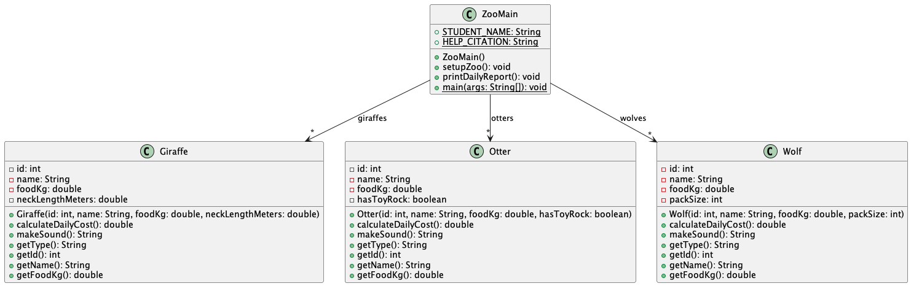

OOD Principles Handout
Review the abstract class example if needed: Abstract Class Resource
Download Starter and import as a Java project: Download Starter
You are designing a system to manage animals in a zoo. The zoo stores shared information about every animal, such as ID, name, and food eaten per day, along with species-specific traits that affect each animal’s daily cost.
All animals have:
foodKg)Each animal must support:
calculateDailyCost() which varies by animal typemakeSound() which varies by animal typegetType() which identifies the animal typegenerateReport() which returns a summary stringSystem Behavior: ZooMain
The current design works, but it has several design problems.
Before you begin coding, study the starter UML and starter code carefully. Think about:
Starter UML:

Refactor the program by introducing an appropriate abstract class named Animal and using inheritance
to remove duplicated state and duplicated behavior while keeping the required program output the same.
The provided JUnit tests are meant to guide your refactor. Read the test names and failure messages carefully.
Expected output format:
---- Zoo Daily Report ---- Wolf (ID 1): eats 12.5kg/day, cost 34.5, sound: Howl Wolf (ID 2): eats 10.0kg/day, cost 27.2, sound: Howl Giraffe (ID 3): eats 25.0kg/day, cost 33.76, sound: Hum Giraffe (ID 4): eats 22.0kg/day, cost 29.26, sound: Hum Otter (ID 5): eats 8.0kg/day, cost 15.6, sound: Squeak Otter (ID 6): eats 7.5kg/day, cost 12.75, sound: Squeak
To see the above output, run the Java application ZooMain.java.
Submit all of the following to GradeScope:
reflection.txtIn reflection.txt (provided in the project zip file), answer the following in 2–3 sentences each:
Animal class during your refactor, and why?ZooMain? Explain how its responsibilities changed in the final design.TestZooMainOutput should remain consistent with the required format above.